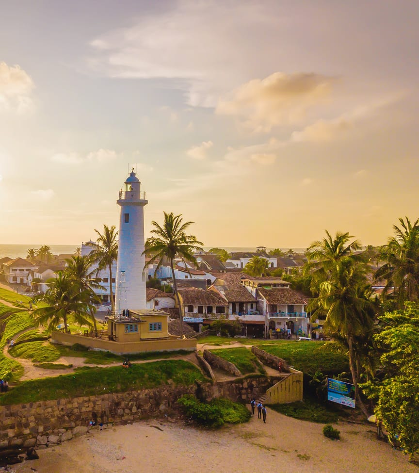

Lighthouse

Lighthouse Galle, located in the historic city of Galle, Sri Lanka, is a captivating landmark that stands tall against the
backdrop of the Indian Ocean. Situated on the southwestern coast of the island, this iconic lighthouse serves as a symbol
of maritime heritage and offers panoramic views of the surrounding landscape. The current lighthouse, constructed in 1939,
replaced the original structure built by the British in the early 19th century.
The history of Lighthouse Galle dates back to the colonial era when the British established control over Sri Lanka. Recognizing the need for a navigational aid to guide ships along the treacherous coastline, the British built the first lighthouse in Galle. This structure played a crucial role in ensuring the safe passage of vessels through the Indian Ocean. However, the original lighthouse was demolished and replaced by the current one in 1939.
Lighthouse Galle holds immense historical and cultural value. It stands as a testament to the city's colonial past and the influence of the British in Sri Lanka. Over the years, it has witnessed significant events, including the colonial rule, the World Wars, and the devastating tsunami in 2004. Despite these challenges, the lighthouse has remained a symbol of resilience and an important landmark for locals and visitors alike.
Beyond its historical significance, Lighthouse Galle offers a mesmerizing experience for tourists. Visitors can climb to the top of the lighthouse and be rewarded with breathtaking views of the ocean, the cityscape, and the fortified walls of Galle Fort. The panoramic vistas provide a unique perspective on the city's natural beauty, and the rhythmic crashing of waves against the rocky coastline creates a soothing ambiance.
Lighthouse Galle serves as a beacon of hope, not only for mariners but also for the local community. It stands as a symbol of the city's enduring spirit and resilience in the face of challenges. Today, the lighthouse attracts a significant number of tourists who come to witness its beauty, learn about its history, and capture memorable photographs. It remains a must-visit destination for those seeking a deeper connection with Galle's rich maritime heritage and the captivating allure of the Indian Ocean.
The history of Lighthouse Galle dates back to the colonial era when the British established control over Sri Lanka. Recognizing the need for a navigational aid to guide ships along the treacherous coastline, the British built the first lighthouse in Galle. This structure played a crucial role in ensuring the safe passage of vessels through the Indian Ocean. However, the original lighthouse was demolished and replaced by the current one in 1939.
Lighthouse Galle holds immense historical and cultural value. It stands as a testament to the city's colonial past and the influence of the British in Sri Lanka. Over the years, it has witnessed significant events, including the colonial rule, the World Wars, and the devastating tsunami in 2004. Despite these challenges, the lighthouse has remained a symbol of resilience and an important landmark for locals and visitors alike.
Beyond its historical significance, Lighthouse Galle offers a mesmerizing experience for tourists. Visitors can climb to the top of the lighthouse and be rewarded with breathtaking views of the ocean, the cityscape, and the fortified walls of Galle Fort. The panoramic vistas provide a unique perspective on the city's natural beauty, and the rhythmic crashing of waves against the rocky coastline creates a soothing ambiance.
Lighthouse Galle serves as a beacon of hope, not only for mariners but also for the local community. It stands as a symbol of the city's enduring spirit and resilience in the face of challenges. Today, the lighthouse attracts a significant number of tourists who come to witness its beauty, learn about its history, and capture memorable photographs. It remains a must-visit destination for those seeking a deeper connection with Galle's rich maritime heritage and the captivating allure of the Indian Ocean.